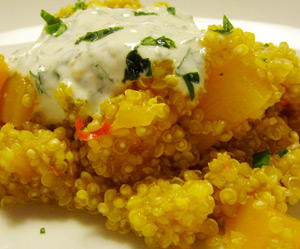

Quinoa-Kürbiseintopf aus den Anden
5,5 von 6Ein daumengrosses Stück geraffelter Ingwer mit zwei fein gehackten, entkernten Chilli-Schoten in etwas Ölivenöl andämpfen. 500 Gramm Kürbisfleisch (z.B. Muscade de Provence) würfeln, dazu geben und zirka 10 Minuten dämpfen. 400 Gramm Quinoa beigeben und mit 8 Dl Gemüsebouillon ablöschen. Zwei Briefchen Safran und etwas frischen Oregano hinzufügen und alles zusammen 10 Minuten bei kleiner Hitze kochen lassen. Vom Herd nehmen und mit zugedecktem Deckel 15 Minuten ziehen lassen bis die Flüssigkeit aufgesaugt ist. In einer kleinen Schüssel ein nature Joghurt, fein gehackte Petersilie, Salz und Pfeffer vermengen. Etwas Quinoa in einen tiefen Teller schöpfen, einen Klecks Joghurt-Sauce darüber geben und mit Brot servieren.
